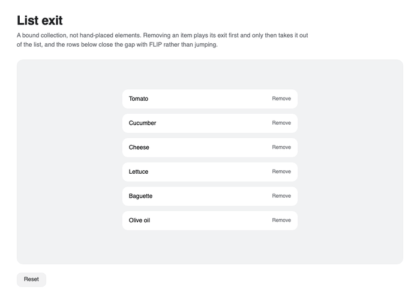
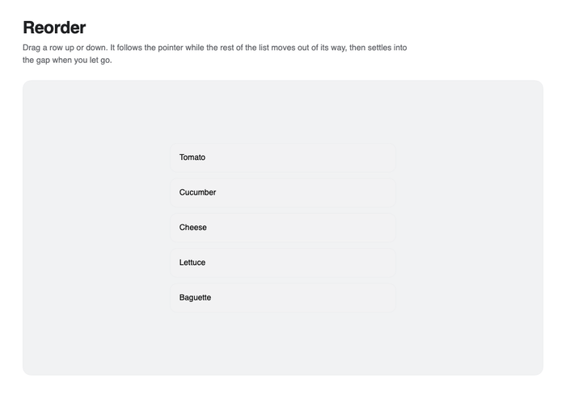
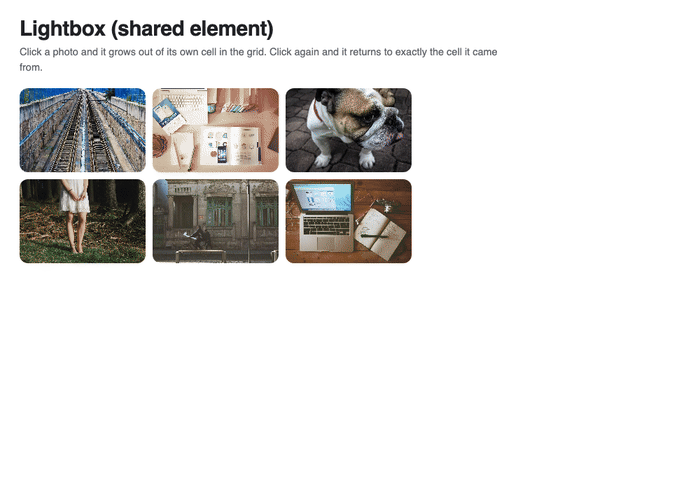

Presence and layout
Nova separates visual presence from immediate visibility so controls can finish an exit, and it uses FLIP projection to animate layout changes without replacing Avalonia layout.
Enter and exit
Motion.Enter defines the initial state. Bind Motion.IsPresent instead of IsVisible when the control must remain visible until Motion.Exit finishes.
<Border nova:Motion.IsPresent="{Binding IsOpen}"
nova:Motion.Enter="opacity:0; y:16; scale:0.98"
nova:Motion.Exit="opacity:0; y:-8; scale:0.98" />
Use EnterStagger on a panel to delay child entrances. Set StaggerFrom="Last" to reverse the order, or StaggerFrom="Center" to start from the middle. Motion.PlayEnter(control) and Motion.ReplayEnter(panel) provide explicit playback when the lifecycle alone is not enough.
<StackPanel nova:Motion.EnterStagger="0.06"
nova:Motion.StaggerFrom="Last">
<Border nova:Motion.Enter="opacity:0; y:18" />
<Border nova:Motion.Enter="opacity:0; y:18" />
</StackPanel>
Animated collection removal
Set an exit state on the generated item container, then await Motion.RemoveAnimatedAsync. The collection item is removed after the visual exit.
var removed = await Motion.RemoveAnimatedAsync(List, Items, item);

Animate layout changes
Set Motion.AnimateLayout on controls that should spring between old and new layout bounds.
<Border nova:Motion.AnimateLayout="True"
nova:Motion.LayoutAnchor="Center"
nova:Motion.CorrectLayoutChildren="True" />
LayoutAnchor controls the pinned point during size projection. Child correction counter-scales descendants so text and icons remain visually stable while the parent resizes.

Shared elements
Give controls in different views the same Motion.LayoutId. When a new control arrives in the same top-level window, Nova projects it from the last recorded bounds and restores its own transform channels after the transition.
<!-- List view -->
<Image nova:Motion.LayoutId="selected-photo" Source="{Binding Thumbnail}" />
<!-- Detail view -->
<Image nova:Motion.LayoutId="selected-photo" Source="{Binding FullImage}" />
Use a stable, unique ID per logical item. Both elements should have valid arranged bounds; avoid changing the ID during the transition.

When the thumbnail and overlay coexist, a lightbox can instead calculate their position and scale delta, animate the overlay to its full-size state, and replay the current delta when closing. Recalculate the destination before dismissal so resizing or layout changes still return to the source thumbnail.
